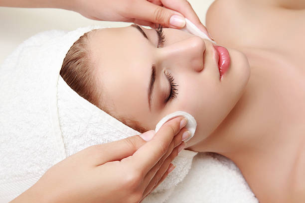

LIMPIEZA FACIAL

Permite la oxigenación de la piel. Se remueven todas las células muertas de la piel y se eliminan las impurezas acumuladas de manera profunda. La piel se vuelve más luminosa y luce más suave y tersa. Ayuda a disminuir la apariencia de cansancio.